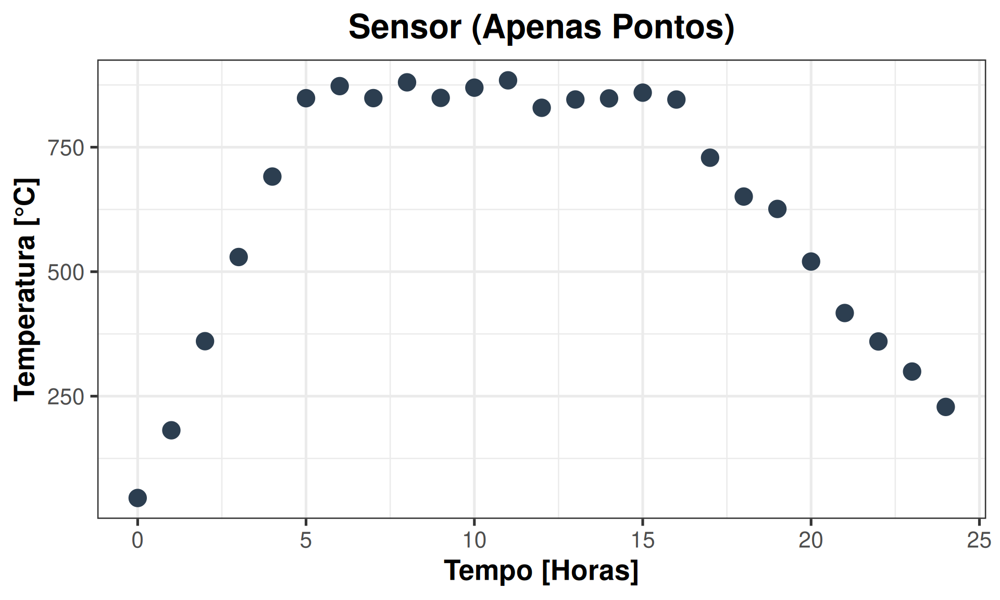
Visualização de Dados
ESTAT0011 – Estatística Aplicada
Prof. Dr. Sadraque E. F. Lucena
sadraquelucena@academico.ufs.br
http://sadraquelucena.github.io/estat-aplicada
Gráfico como Ferramenta de Decisão
Na Engenharia, o gráfico não é uma mera ilustração; é um instrumento de diagnóstico de processos e materiais.
- DADO: A leitura bruta (ex: 5.000 pontos de carga e extensão – o quanto o material esticou).
- INFORMAÇÃO: O padrão visual (ex: a inclinação da reta indica o Módulo de Young – rigidez/elasticidade do material).
- DECISÃO: A ação técnica (ex: “Este lote de polímero é adequado para a peça?”).
Observação: Não buscamos o gráfico mais “bonito”, mas aquele que torna a falha (quebra do material) ou o sucesso evidente.
Por que Visualizar Dados?
A representação gráfica permite extrair inteligência de grandes volumes de medições que seriam incompreensíveis em tabelas:
- Identificar Padrões (Ex: A relação entre temperatura e taxa de corrosão.)
- Validar Expectativas: Confirmar se o tratamento térmico atingiu a dureza esperada.
- Descobrir Fenômenos: Detectar anomalias ou falhas raras em lotes de produção.
- Validar Estatísticas: Verificar se a distribuição dos dados permite o uso de testes paramétricos (cálculos que exigem dados “normais”).
Ponto de Partida: O Tipo de Variável
- A escolha do gráfico não é estética, é técnica. A natureza dos dados define a visualização:
- Há então gráficos para
- Variáveis Qualitativas (Categóricas)
- Variáveis Quantitativas (Numéricas).
- O tipo de variável é que define as opções de gráficos que você pode utilizar.
Requisitos de um Gráfico Técnico
Para que um gráfico sirva como prova técnica em um relatório de engenharia, ele deve conter:
- Título Autoexplicativo: Indica claramente o que foi medido.
- Eixos Rotulados: Nome da variável e sua unidade de medida (Ex: Tensão [MPa]).
- Escala Sensata: Evita distorções que mascarem a variação real.
- Legenda Objetiva: Diferencia as condições de ensaio ou materiais.
Atenção! Um gráfico sem unidade (como MPa, °C ou mm) é inválido em um laudo técnico. Na dúvida, sempre pergunte: “Alguém conseguiria entender este gráfico sem eu precisar explicar?”.
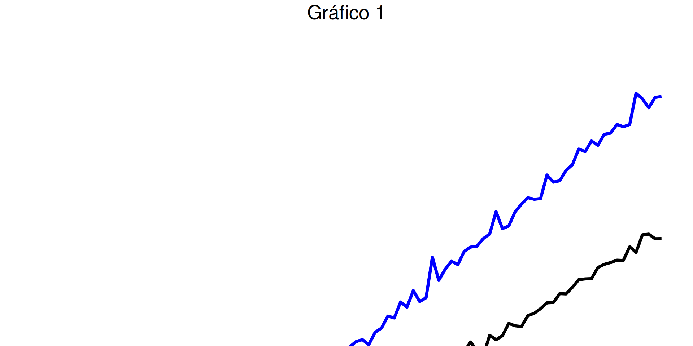
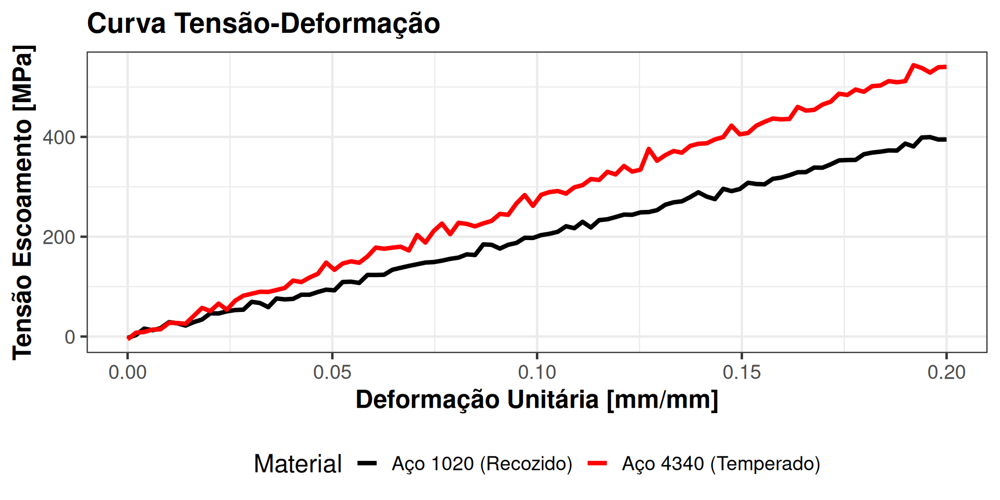
Variáveis Qualitativas (Categóricas)
Visualização de Dados Categóricos
- Quando os dados representam grupos ou nomes (Qualitativos), o objetivo da visualização é comparar a frequência ou a proporção entre categorias.
- As principais escolhas são:
- Gráfico de Barras: Para comparar magnitudes.
- Gráfico de Barras Empilhadas: Para comparar subgrupos dentro de categorias.
- Gráfico de Pareto: Para priorização de problemas.
- Gráfico de Setores (Pizza): Para mostrar partes de um todo.
Gráfico de Barras
É a forma mais eficiente de comparar quantidades entre diferentes grupos (categorias).
- Como Construir:
- Eixo X (Categorias): Espaçamento igual entre as barras.
- Eixo Y (Frequência): Deve sempre começar no zero.
- Largura das Barras: Deve ser constante para não sugerir “peso” diferente.
- Ordenação: Se não houver ordem natural, organize de forma decrescente.
Exemplo: Identificação de Falhas Críticas
Considere a contagem de defeitos encontrados em uma inspeção de 500 componentes poliméricos.
| Categoria de Defeito | Ocorrências | Impacto |
|---|---|---|
| Bolhas (Vazios) | 145 | Crítico |
| Delaminação | 52 | Crítico |
| Rebarbas | 30 | Estético |
| Manchas | 12 | Estético |
Fonte: Dados fictícios (2026).
Exemplo: Identificação de Falhas Críticas
O gráfico abaixo responde: “Qual processo de fabricação deve ser ajustado primeiro?”
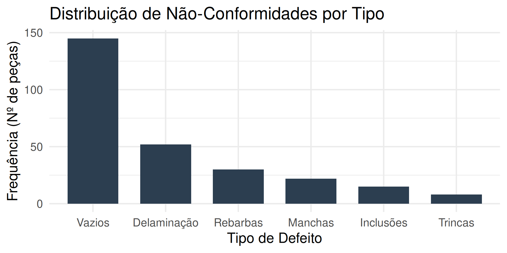
- Insight: O excesso de “Vazios” sugere falha no sistema de vácuo ou na viscosidade da resina.
Regras de Construção e Escala
O gráfico de barras é a escolha padrão para representar a magnitude de variáveis categóricas (nominais ou ordinais).
- Aplicação: Comparar quantidades entre grupos independentes.
- Construção:
- O eixo das categorias não possui escala métrica (é uma lista).
- O eixo quantitativo deve sempre começar no zero para não distorcer as proporções.
- Interpretação:
- A altura (ou comprimento) da barra é proporcional ao valor que ela representa.
- Ordenação: Salvo se houver uma ordem natural (ex: meses), as barras devem estar em ordem decrescente para facilitar a comparação visual imediata.
- Quando os rótulos das categorias são longos ou numerosos, a rotação facilita a leitura sem poluir o eixo horizontal.
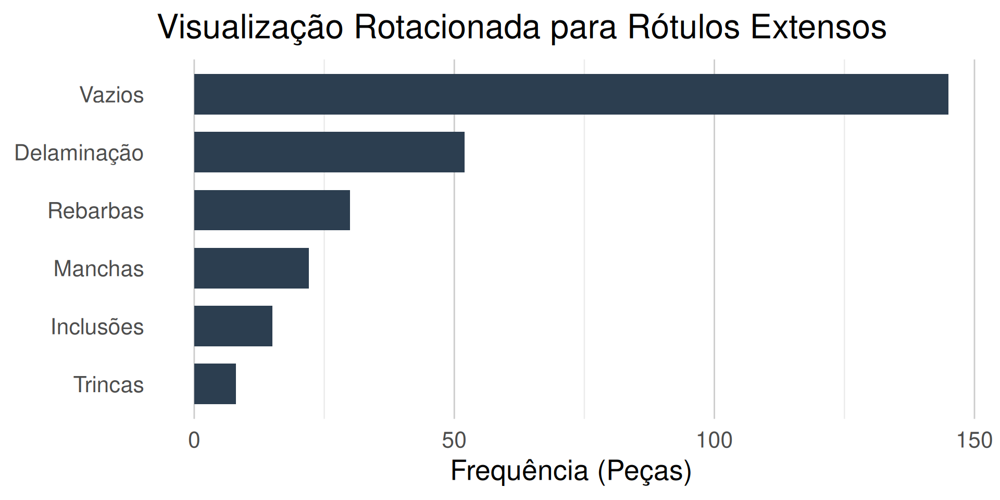
Respeitando a Hierarquia dos Dados
- Ao contrário das variáveis nominais (onde ordenamos por frequência), variáveis ordinais possuem uma hierarquia intrínseca. O gráfico deve preservar a ordem natural, mesmo que a frequência não seja decrescente.
- Exemplo: Grau de Severidade de Desgaste em ferramentas de corte.
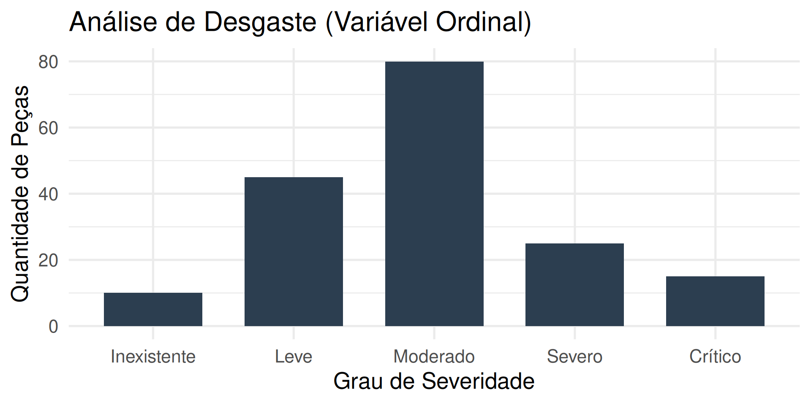
Comparação entre grupos
Problema: Como diferentes fornecedores se comportam em diferentes ensaios?
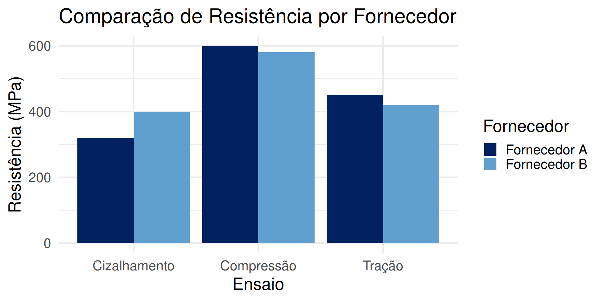
Barras empilhadas
- Cada segmento corresponde a uma subcategoria.
- A altura total da barra representa a soma de todas as subcategorias.
- Permite observar simultaneamente o total de cada categoria e a sua composição interna.
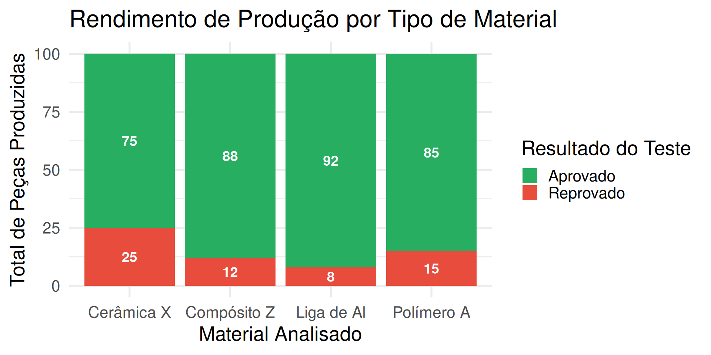
- Interpretação: A Cerâmica X possui o maior índice de reprovação (25 peças), indicando que o processo de sinterização precisa de ajustes.
Gráfico de Pareto
O Gráfico de Pareto é um gráfico de barras decrescentes com uma linha de frequência acumulada sobreposta.
Ideia: 20% das causes geram 80% dos defeitos (regra dos 80/20).
Este gráfico indica onde o esforço de engenharia terá o maior retorno financeiro e de qualidade.
Como ele é estruturado:
- Barras (em ordem decrescente): frequência ou quantidade de ocorrências
- Linha acumulada: soma percentual dos problemas
- Dois eixos Y:
- esquerdo → quantidade
- direito → porcentagem
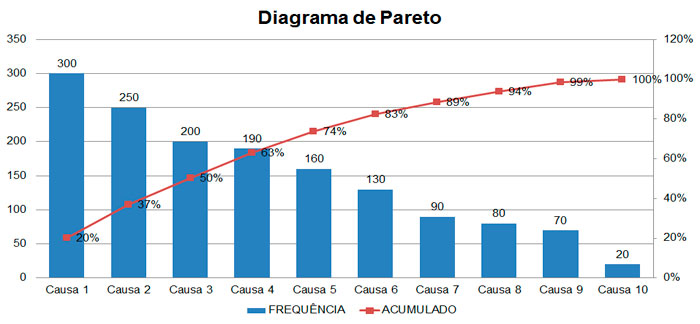
Exemplo
Um engenheiro de materiais catalogou as causas de descarte de 250 peças de alumínio em uma semana. O objetivo é reduzir a perda de material.
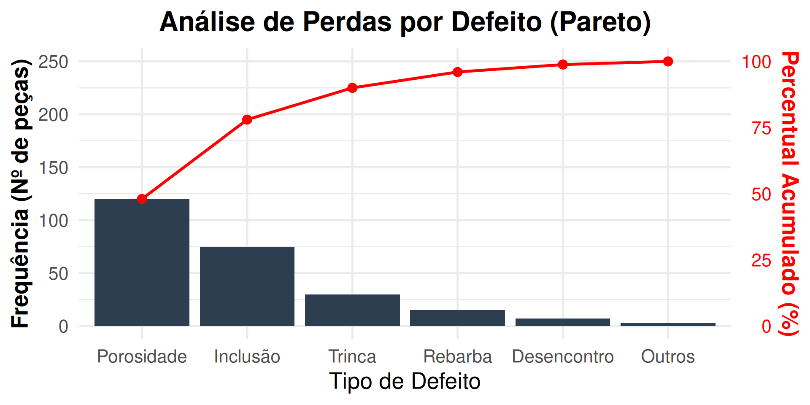
Insight: Atacando apenas Porosidade (pequenos buracos/vazios no metal) e Inclusão (sujeira presa dentro do material), o engenheiro resolve quase 80% das falhas do setor.
Gráfico de Setores (Pizza)
O gráfico de setores mostra a relação entre as partes e o todo. Embora popular, ele é frequentemente criticado na engenharia.
Quando usar:
- Poucas categorias (máximo 3 ou 4).
- Diferenças de magnitude muito óbvias.
Por que evitar:
- O olho humano tem dificuldade em comparar áreas e ângulos com precisão.
- É difícil ler rótulos em fatias muito pequenas.
Alternativa: Gráfico de barras (sempre mais preciso para comparação técnica).
Exemplo
Neste caso, o gráfico de setores funciona porque as categorias são poucas e as diferenças são grandes.
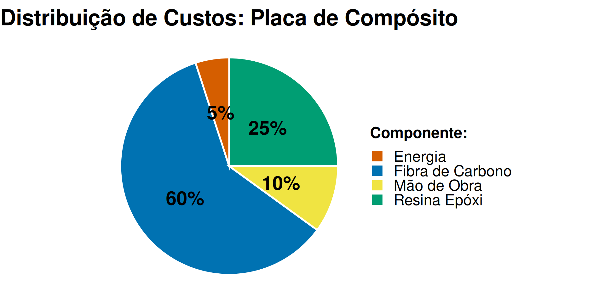
Dica: Se você precisar de números escritos dentro da fatia para que o gráfico seja entendido, um gráfico de barras provavelmente seria melhor.
Variáveis Quantitativas (Numéricas)
Visualização de Dados Numéricos
Quando os dados representam medidas ou contagens (Quantitativos), o objetivo é entender a distribuição, a variabilidade ou a relação entre variáveis. As principais escolhas são:
- Histograma: Mostra a distribuição dos dados.
- Gráfico de Densidade: Versão “suavizada” do histograma.
- Boxplot: Resume estatísticas e identifica outliers (dados muito fora do normal).
- Gráfico de Violino: Une boxplot com densidade.
- Gráfico de Dispersão: Avalia relação entre duas medidas (Ex: Temperatura vs. Dureza).
- Gráfico de Linha: Para séries temporais (dados medidos ao longo do tempo).
Histograma
- É a ferramenta principal para visualizar a distribuição de uma variável quantitativa contínua.
- Ele mostra frequência com que valores ocorrem em determinados intervalos (bins).
- Formatação:
- Eixo X: Escala numérica contínua dividida em intervalos iguais.
- Eixo Y: Frequência absoluta ou relativa.
- Barras Adjacentes: Diferente do gráfico de barras, as barras do histograma são encostadas para indicar a continuidade dos dados.
- Objetivo: Identificar o centro, a dispersão e o formato (simetria) dos dados.
Exemplo
Imagine que medimos a dureza de 100 amostras de um lote de aço. O gráfico nos diz se o processo de fabricação está estável ou se há muita variação.
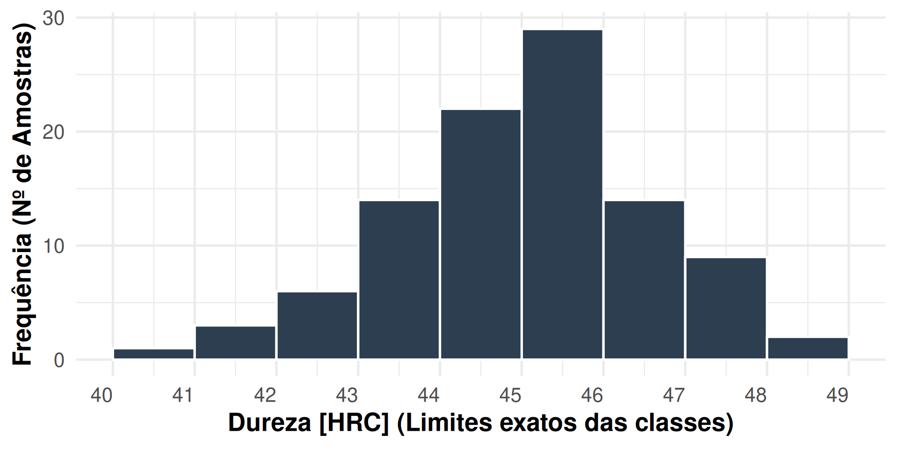
- O histograma é a representação gráfica de uma Tabela de Distribuição de Frequências por Classes.
- Para as 100 amostras de aço, teríamos a seguinte tabela.
| Dureza (HRC) | Freq. Absoluta |
|---|---|
| \(40 \vdash 41\) | 1 |
| \(41 \vdash 42\) | 3 |
| \(42 \vdash 43\) | 6 |
| \(43 \vdash 44\) | 14 |
| \(44 \vdash 45\) | 22 |
| \(45 \vdash 46\) | 29 |
| \(46 \vdash 47\) | 14 |
| \(47 \vdash 48\) | 9 |
| \(48 \vdash 49\) | 2 |
Gráfico de densidade
O gráfico de densidade é uma versão suavizada do histograma.
- Como é feito: Utiliza uma técnica matemática chamada Kernel Density Estimation (KDE) para criar uma linha contínua que estima a probabilidade de um valor ocorrer.
- Interpretação:
- A área total sob a curva é igual a 1.
- Picos indicam onde os dados estão mais concentrados.
- Útil para comparar distribuições de grupos diferentes sem a poluição visual de muitas barras sobrepostas.
Utilizando os mesmos dados de do lote de aço:
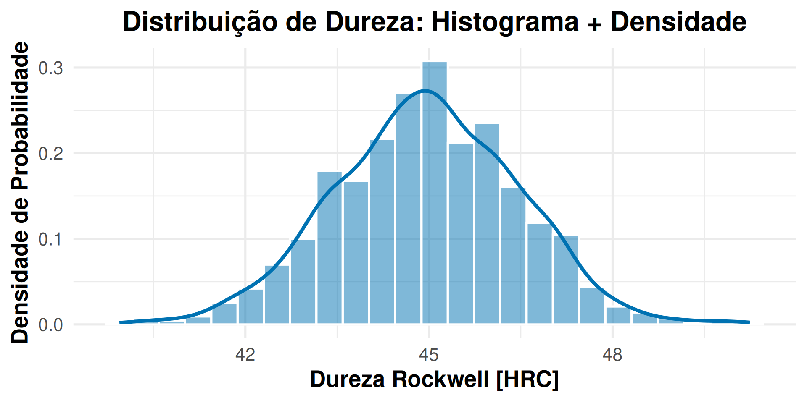
Boxplot
Boxplot, ou diagrama de caixa, é um gráfico que divide os dados em quartis e é a melhor ferramenta para identificar a variabilidade de um material.
Ele exibe cinco estatísticas principais:

Exemplo
Utilizando os mesmos dados de do lote de aço:
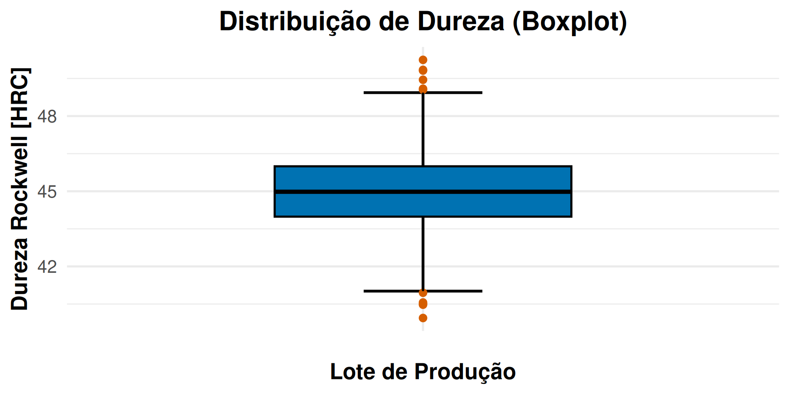
O gráfico de boxplot é a útil para comparar a estabilidade de processos.
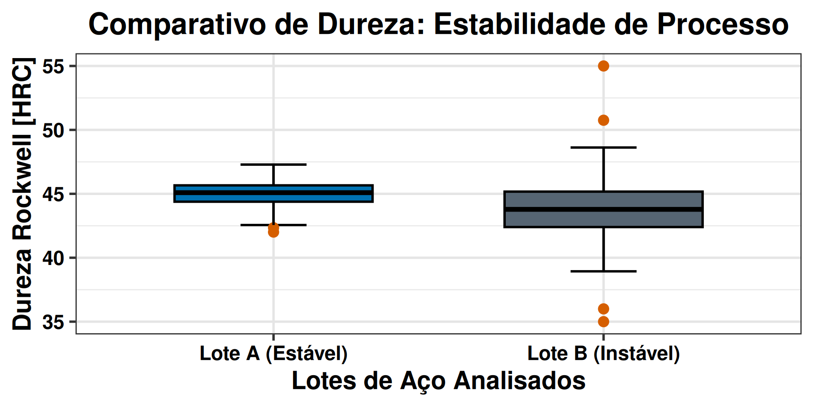
Gráfico de Violino
- Combina um boxplot com uma estimativa de densidade de kernel.
- Quanto mais largo o violino em um determinado ponto, maior a concentração de dados naquele valor.
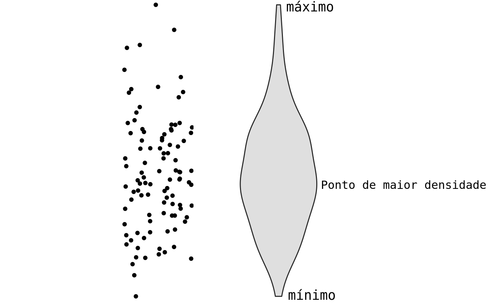
Exemplo
Utilizando os mesmos dados de do lote de aço:
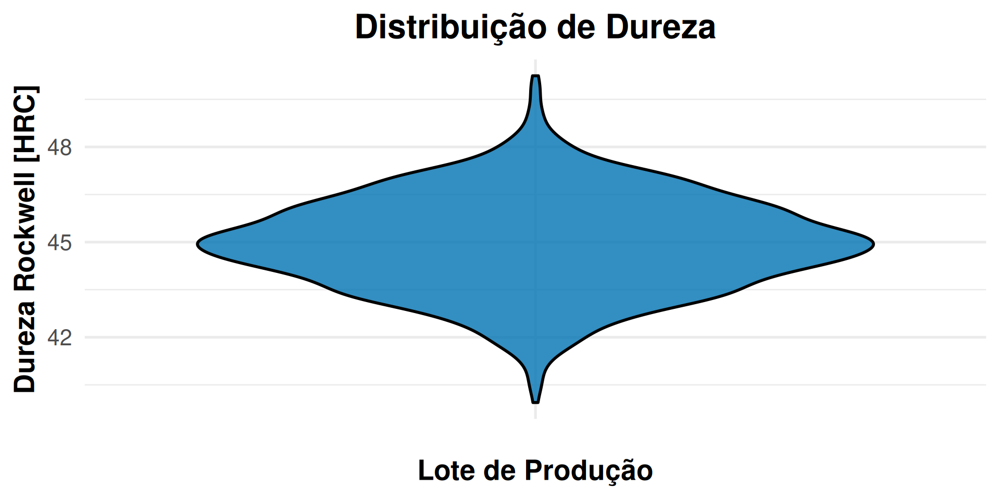
O gráfico de violino também serve para comprar grupos.
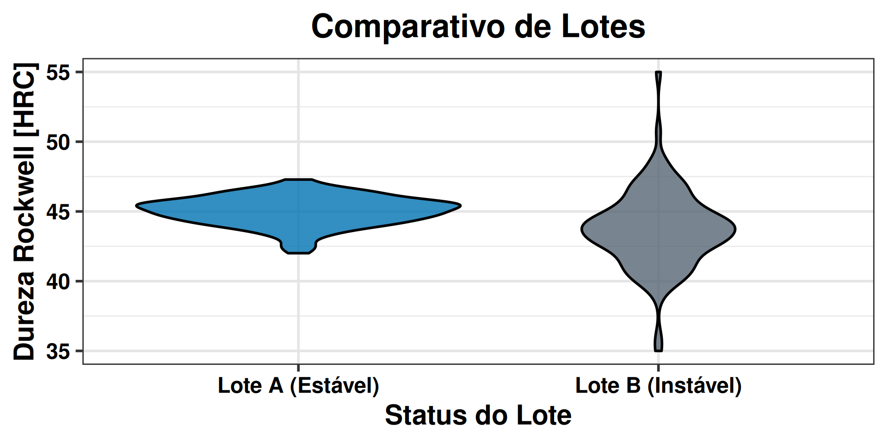
Visualização de Associações
Gráfico de dispersão
- Serve para visualização de duas variáveis ao mesmo tempo.
- Auxilia a compreensão da relação entre variáveis.
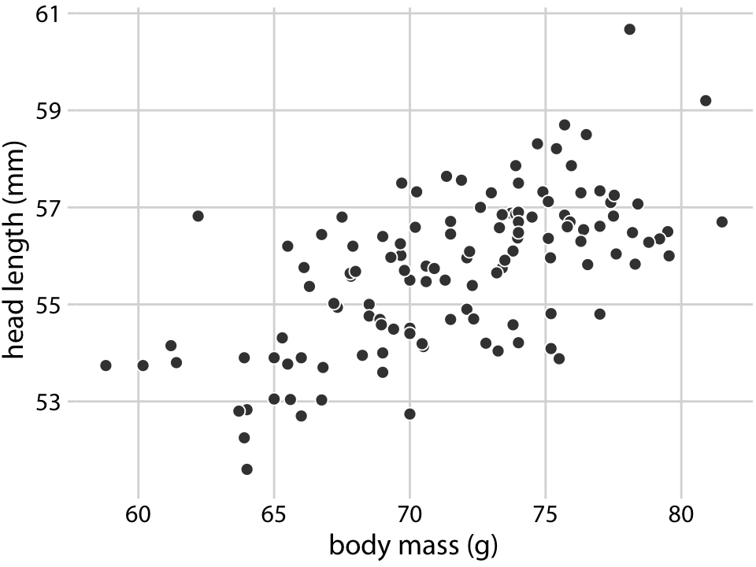
Tamanho da cabeça de uma espécie de pássaro e sua massa corporal.
Visualização de Associações
Gráfico de Dispersão (Scatterplot)
O Gráfico de Dispersão é usado para visualizar duas variáveis numéricas ao mesmo tempo e descobrir relações de causa e efeito.
- Interpretação:
- Pontos subindo: correlação positiva (correlação direta).
- Pontos descendo: correlação negativa (correlação inversa).
- Pontos sem padrão: dados não correlacionados.
Exemplo
Queremos saber o que acontece com a dureza do aço 1045 à medida que aumentamos a temperatura do forno.
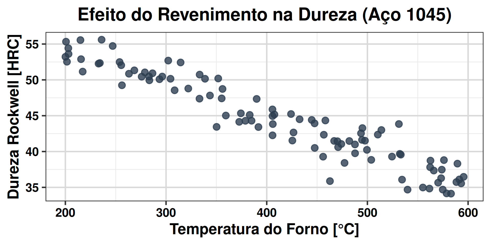
Visualização de Dados no Tempo
Gráfico de Linha (Série Temporal)
É a forma mais comum e eficaz de mostrar como uma variável física evolui ao longo do tempo.
- Diferente do Gráfico de Dispersão (pontos isolados), a linha indica continuidade.
- Ele mostra tendências, ciclos ou anomalias ao longo de um período.
Exemplo: Ciclo Térmico de um Forno de Têmpera
Se plotarmos o sensor do forno apenas com pontos, nosso cérebro tem dificuldade em seguir o caminho do aquecimento. Quando conectamos com uma linha, a história do material fica óbvia.
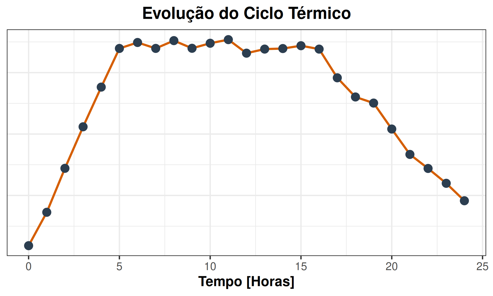
Insight: A linha nos permite ver claramente as três fases do tratamento: Aquecimento (subida), Patamar de Austenizacão (reta estável em 850°C) e Resfriamento (descida).
Para saber mais
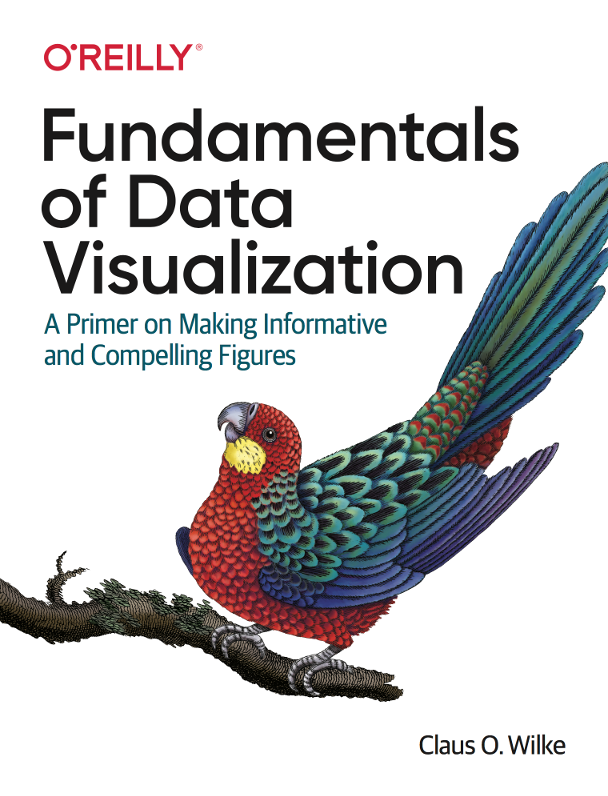
Fim